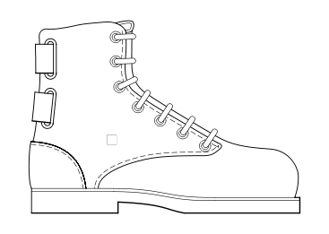

|  |
boot.kernel.org(BKO) : Booting your machine over HTTP |
vi BKO/configureMake sure that you provide proper values for atleast GPXE_GIT_LOCATION, BOOT_URL and ISO_LOCATION_LOCAL Other entries are optional, you can leave them untouched. Please refer bellow for more details on the meaning of the configuration variables.
cd BKO/install_help ./deploy.sh ./download_ISO.sh